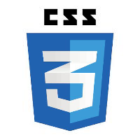

Testando as minha habilidade para aprimorar o meu aprendizado

lista ordenada
meus passatempo favoritos
- programação
- c#
- python
- JavaScript
- java
- futebol
- futebol 11
- futsal
- fb.praia
- fb.da rua
- comedia
- arroz com feijão
- pizza
- ambuegues
- macarrão
- música
- rock
- pop
- certanejo
- hip hop
- cantar
- românticas
- canções originais
- cânticos de louvor
- pop
- malhar
- dancar
- pregar
Lista não ordenada
meus alvos para 2026
- trabalhar com HTML5 e CSS3
- fundar minha empresa
- estudar JavaScript, PHP, MSQL e Python
- ser dev fullstek
- e estudar mais sobre cybersecyuty
Definições de temos
- HTML
- é uma linguagem de marcação de no desenvolvimentos de site
- Amor
- O amor é a qualidade essencial para boa comunicação e convívio
num=int(input("digite um número"))
if=num % 2==0;
print("O número,{}, é par")
els;
prin("O número,{}, é impar)
print(“fim do programa")
¢
€
🤓
🚕